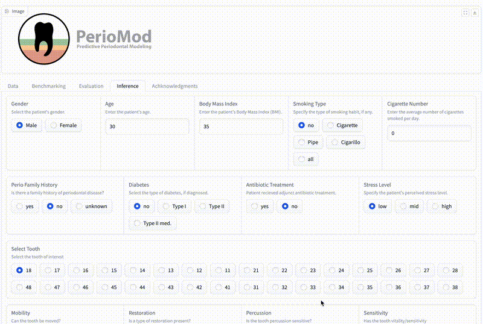

Documentation¶
Overview¶
Welcome to the periodontal-modeling documentation, a fully automated benchmarking and evaluation package for short-term periodontal modeling. The package provides flexible and efficient preprocessing, model tuning, evaluation, inference, and descriptive analysis with an interactive Gradio frontend, allowing users to perform comprehensive periodontal data modeling.
This documentation includes detailed information on the functionality, setup, and usage of each module and provides code examples for streamlined integration into your projects.
peridontal-modeling, or in short periomod, is specifically tailored to hierarchical periodontal patient data and was developed for Python 3.11, but is also compatible with Python 3.10.
Installation¶
Getting Started¶
If you're not familiar with Python or programming, the following resources can help you get started with installing Python, managing environments, and setting up tools like Jupyter Notebooks:
Installing Python¶
- Official Python Website: Download and install Python from the official Python website.
- Make sure to download Python 3.10 or 3.11.
-
During installation, check the box to add Python to your system's PATH.
-
Python Installation Guide: Follow this step-by-step guide for detailed instructions on setting up Python on your system.
Installing Conda¶
Conda is an environment and package manager that makes it easy to install dependencies and manage Python environments.
- Miniconda: Download and install Miniconda, a lightweight version of Conda.
- Full Anaconda Distribution: Alternatively, install the Anaconda Distribution, which includes Conda and many pre-installed libraries.
You can create a virtual environment with conda:
conda create -n periomod python=3.11
conda activate periomod
Setting Up Jupyter Notebooks¶
Jupyter Notebooks are an excellent tool for analyzing data and running experiments interactively.
Installing periomod¶
Ensure you have Python 3 installed. You may preferebly setup a new environment with Python 3.10 or 3.11. Install the package with all its dependencies via pip:
pip install periomod
Core Modules¶
The following sections summarize each core module within periodontal-modeling, with links to detailed documentation and examples for each function.
App Module¶
The App module hosts the Gradio-based interface, providing a unified platform for tasks such as plotting descriptives, conducting benchmarks, evaluating models, and performing inference.
Data Module¶
The Data module provides tools for loading, transforming, and saving processed periodontal data. Classes like StaticProcessEngine handle data preparation, while ProcessedDataLoader is tailored for fully preprocessed datasets, supporting encoding and scaling options.
Descriptive Analysis¶
The Descriptives module enables users to perform statistical analysis and visualize periodontal data pre- and post-therapy using tools like DescriptivesPlotter. It includes methods for generating matrices, histograms, and pocket depth comparisons.
Read more on the Descriptives Module
Training Module¶
The Training module provides core training and model-building functionalities, including threshold tuning. The Trainer classes allow you to streamline model fitting.
Read more on the Training Module
Tuning Module¶
The Tuning module offers classes like HEBOTuner and RandomSearchTuner for hyperparameter optimization, supporting both Bayesian optimization and random search.
Read more on the Tuning Module
Evaluation Module¶
The Evaluation module supplies methods for post-model training analysis, including prediction assessment, feature importance calculations, and feature clustering. The ModelEvaluator class enables confusion matrix plotting and other feature-based evaluations.
Read more on the Evaluation Module
Inference Module¶
The Inference module handles patient-specific predictions, confidence intervals through jackknife resampling, and both single and batch inference. The ModelInference class supports robust inference operations.
Read more on the Inference Module
Benchmarking Module¶
The Benchmarking module provides tools for running and comparing multiple experiments across different tuning setups. Use Experiment for single benchmark execution or Benchmarker to perform full comparative analyses across models and configurations.
Read more on the Benchmarking Module
Wrapper Module¶
The Wrapper module simplifies the benchmarking and evaluation setup, consolidating various submodules for a more concise codebase. BenchmarkWrapper enables straightforward benchmarking, while EvaluatorWrapper supports model evaluation, feature importance, and patient-level inference.
Read more on the Wrapper Module
Features¶
- Preprocessing Pipeline: Flexible preprocessing of periodontal data, including encoding, scaling, data imputation and transformation.
- Descriptive Analysis: Generate descriptive statistics and plots such as confusion matrices and bar plots.
- Automatic Model Tuning: Supports multiple learners and tuning strategies for optimized model training.
- Resampling: Allows the use of grouped holdout and cross-validation resampling.
- Imbalanced Data Handling: Enables the application of SMOTE and upsampling/downsampling to balance dataset classes.
- Model Evaluation: Provides a wide range of evaluation tools, including confusion matrices, clustering and feature importance.
- Inference: Patient-level inference, jackknife resampling and confidence intervals.
- Interactive Gradio App: A simple Gradio interface for streamlined model benchmarking, evaluation and inference.
Usage¶
App Module¶
The periomod app provides a streamlined gradio interface for plotting descriptives, performing benchmarks, model evaluation and inference.
from periomod.app import perioapp
perioapp.launch()
If you download the repository and install the package in editable mode, the following make command starts the app:
pip install -e .
make app
The app can also be launched using docker. Run the following commands in the root of the repository:
docker build -f docker/app.dockerfile -t periomod-image .
docker run -p 7890:7890 periomod-image
By default, the app will be launched on port 7890 and can be accessed at http://localhost:7890.
Alternatively, the following make commands are available to build and run the docker image:
make docker-build
make docker-run
App Features¶
Data Tab¶
The data tab enables data loading, processing and saving. It further provides multiple plotting methods for data visualization.The Data Tab enables data loading, processing, and saving. It provides several options for exploring and visualizing the dataset, making it easy to gain insights before proceeding to modeling or benchmarks.
Benchmarking Tab¶
The Benchmarking Tab allows you to perform comparisons of different machine learning models, incorporating hyperparameter tuning, sampling, resampling and different criteria. The results are displayed in a clear and interactive format and allow the comparison with a model baseline.
Evaluation Tab¶
The Evaluation Tab provides detailed performance metrics and visualizations for the trained models. These include confusion matrices, calibration plots, feature importance analysis, clustering, and Brier skill scores. It offers a comprehensive overview of the model performance.

Inference Tab¶
In the Inference Tab, patient data can be selected and submitted for predictions using a trained model. Additionally, Jackknife confidence intervals can be calculated to evaluate prediction stability.

Data Module¶
Use the StaticProcessEngine class to preprocess your data. This class handles data transformations and imputation.
from periomod.data import StaticProcessEngine
engine = StaticProcessEngine()
data = engine.load_data(path="data/raw/raw_data.xlsx")
data = engine.process_data(data)
engine.save_data(df=datas, path="data/processed/processed_data.csv")
The ProcessedDataLoader requires a fully imputed dataset. It contains methods for scaling and encoding. As encoding types, 'one_hot' and 'target' can be selected. The scale argument scales numerical columns. One out of four periodontal task can be selected, either "pocketclosure", "pocketclosureinf", "pdgrouprevaluation" or "improvement".
from periomod.data import ProcessedDataLoader
# instantiate with one-hot encoding and scale numerical variables
dataloader = ProcessedDataLoader(
task="pocketclosure", encoding="one_hot", encode=True, scale=True
)
data = dataloader.load_data(path="data/processed/processed_data.csv")
data = dataloader.transform_data(data=data)
dataloader.save_data(df=data, path="data/training/training_data.csv")
Descriptives Module¶
DesctiptivesPlotter can be used to plot descriptive plots for target columns before and after treatment. It should be applied on a processed dataframe.
from periomod.data import ProcessedDataLoader
from periomod.descriptives import DescriptivesPlotter
data = dataloader.load_data(path="data/processed/processed_data.csv")
# instantiate plotter with dataframe
plotter = DescriptivesPlotter(data)
plotter.plt_matrix(vertical="pdgrouprevaluation", horizontal="pdgroupbase")
plotter.pocket_comparison(col1="pdbaseline", col2="pdrevaluation")
plotter.histogram_2d(col_before="pdbaseline", col_after="pdrevaluation")
Resampling Module¶
The Resampler class allows for straightforward grouped splitting operations. It also includes different sampling strategies to treat the minority classes. It can be applied on the training data.
from periomod.data import ProcessedDataLoader
from periomod.resampling import Resampler
data = dataloader.load_data(path="data/processed/training_data.csv")
resampler = Resampler(classification="binary", encoding="one_hot")
train_df, test_df = resampler.split_train_test_df(df=data, seed=42, test_size=0.3)
# upsample minority class by a factor of 2.
X_train, y_train, X_test, y_test = resampler.split_x_y(
train_df, test_df, sampling="upsampling", factor=2
)
# performs grouped cross-validation with "smote" sampling on the training folds
outer_splits, cv_folds_indices = resampler.cv_folds(
df=train_df, sampling="smote", factor=2.0, seed=42, n_folds=5
)
Training Module¶
Trainer contains different training methods that are used during hyperparameter tuning and benchmarking. It further includes methods for threshold tuning in the case of binary classification and when the criterion "f1" is selected. The Resamplercan be used to split the data for training.
from periomod.training import Trainer
from sklearn.ensemble import RandomForestClassifier
trainer = Trainer(classification="binary", criterion="f1", tuning="cv", hpo="hebo")
score, trained_model, threshold = trainer.train(
model=RandomForestClassifier,
X_train=X_train,
y_train=y_train,
X_val=X_val,
y_val=y_val,
)
print(f"Score: {score}, Optimal Threshold: {threshold}")
The trainer.train_mlp function uses the partial_fit method of the 'MLPClassifier' to leverage early stopping during the training process.
from sklearn.neural_network import MLPClassifier
score, trained_mlp, threshold = trainer.train_mlp(
mlp_model=MLPClassifier,
X_train=X_train,
y_train=y_train,
X_val=X_val,
y_val=y_val,
final=True,
)
print(f"MLP Validation Score: {score}, Optimal Threshold: {threshold}")
Tuning Module¶
The tuning module contains the HEBOTunerand RandomSearchTuner classes that can be used for hyperparameter tuning.
HEBOTuner leverages Bayesian optimization to obtain the optimal set of hyperparameters.
from periomod.training import Trainer
from periomod.tuning import HEBOTuner
trainer = Trainer(
classification="binary",
criterion="f1",
tuning="holdout",
hpo="hebo",
mlp_training=True,
threshold_tuning=True,
)
tuner = HEBOTuner(
classification="binary",
criterion="f1",
tuning="holdout",
hpo="hebo",
n_configs=20,
n_jobs=-1,
trainer=trainer,
)
# Running holdout-based tuning
best_params, best_threshold = tuner.holdout(
learner="rf", X_train=X_train, y_train=y_train, X_val=X_val, y_val=y_val
)
# Running cross-validation tuning
best_params, best_threshold = tuner.cv(learner="rf", outer_splits=cross_val_splits)
RandomSearchTuner implements random search tuning by sampling parameters at random from specified ranges. Also, allows for racing when cross-validation is used as tuning technique.
from periomod.training import Trainer
from periomod.tuning import RandomSearchTuner
trainer = Trainer(
classification="binary",
criterion="f1",
tuning="cv",
hpo="rs",
mlp_training=True,
threshold_tuning=True,
)
tuner = RandomSearchTuner(
classification="binary",
criterion="f1",
tuning="cv",
hpo="rs",
n_configs=15,
n_jobs=4,
trainer=trainer,
)
# Running holdout-based tuning
best_params, best_threshold = tuner.holdout(
learner="rf", X_train=X_train, y_train=y_train, X_val=X_val, y_val=y_val
)
# Running cross-validation tuning
best_params, best_threshold = tuner.cv(learner="rf", outer_splits=cross_val_splits)
Evaluation Module¶
ModelEvaluator contains method for model evaluation after training, including prediction analysis and feature importance.
from periomod.evaluation import ModelEvaluator
evaluator = ModelEvaluator(
X=X_test, y=y_test, model=trained_rf_model, encoding="one_hot"
)
# Plots confusion matrix of target column
evaluator.plot_confusion_matrix()
# plot feature importances
evaluator.evaluate_feature_importance(fi_types=["shap", "permutation"])
# perform feature clustering
brier_plot, heatmap_plot, clustered_data = evaluator.analyze_brier_within_clusters()
Inference Module¶
The inference module includes methods for single but also patient-level predictions. Jackknife resampling and confidence intervals are also available.
from periomod.base import Patient, patient_to_dataframe
from periomod.inference import ModelInference
model_inference = ModelInference(
classification="binary", model=trained_model, verbose=True
)
# Define a patient instance
patient = Patient()
patient_df = patient_to_df(patient=patient)
# Prepare data for inference
prepared_data, patient_data = model_inference.prepare_inference(
task="pocketclosure",
patient_data=patient_df,
encoding="one_hot",
X_train=X_train,
y_train=y_train,
)
# Run inference on patient data
inference_results = model_inference.patient_inference(
predict_data=prepared_data, patient_data=patient_data
)
# Perform jackknife inference with confidence interval plotting
jackknife_results, ci_plot = model_inference.jackknife_inference(
model=trained_model,
train_df=train_df,
patient_data=patient_df,
encoding="target",
inference_results=inference_results,
alpha=0.05,
sample_fraction=0.8,
n_jobs=4,
)
Benchmarking Module¶
The benchmarking module contains methods to run single or multiple experiments with a specified tuning setup. For a single experiment the Experimentclass can be used.
from periomod.benchmarking import Experiment
from periomod.data import ProcessedDataLoader
# Load a dataframe with the correct target and encoding selected
dataloader = ProcessedDataLoader(task="pocketclosure", encoding="one_hot")
data = dataloader.load_data(path="data/processed/processed_data.csv")
data = dataloader.transform_data(data=data)
experiment = Experiment(
data=data,
task="pocketclosure",
learner="rf",
criterion="f1",
encoding="one_hot",
tuning="cv",
hpo="rs",
sampling="upsample",
factor=1.5,
n_configs=20,
racing_folds=5,
)
# Perform the evaluation based on cross-validation
final_metrics = experiment.perform_evaluation()
print(final_metrics)
For multiple experiments, the Benchmarker class provides a streamlined benchmarking process. It will output a dictionary based on the best 4 models for a respective tuning criterion and the full experiment runs in a dataframe.
from periomod.benchmarking import Benchmarker
benchmarker = Benchmarker(
task="pocketclosure",
learners=["xgb", "rf", "lr"],
tuning_methods=["holdout", "cv"],
hpo_methods=["hebo", "rs"],
criteria=["f1", "brier_score"],
encodings=["one_hot", "target"],
sampling=[None, "upsampling", "downsampling"],
factor=2,
path="/data/processed/processed_data.csv",
)
# Running all benchmarks
results_df, top_models = benchmarker.run_all_benchmarks()
print(results_df)
print(top_models)
Wrapper Module¶
The wrapper module wraps benchmark and evaluation methods to provide a straightforward setup that requires a minimal amount of code while making use of all the submodules contained in the periomod package.
The BenchmarkWrapper includes the functionality of the Benchmarker while also wrapping methods for baseline benchmarking and saving.
from periomod.wrapper import BenchmarkWrapper
# Initialize the BenchmarkWrapper
benchmarker = BenchmarkWrapper(
task="pocketclosure",
encodings=["one_hot", "target"],
learners=["rf", "xgb", "lr", "mlp"],
tuning_methods=["holdout", "cv"],
hpo_methods=["rs", "hebo"],
criteria=["f1", "brier_score"],
sampling=["upsampling"],
factor=2,
path="/data/processed/processed_data.csv",
)
# Run baseline benchmarking
baseline_df = benchmarker.baseline()
# Run full benchmark and retrieve results
benchmark, learners = benchmarker.wrapped_benchmark()
# Save the benchmark results
benchmarker.save_benchmark(
benchmark_df=benchmark,
path="reports/experiment/benchmark.csv",
)
# Save the trained learners
benchmarker.save_learners(learners_dict=learners, path="models/experiment")
The EvaluatorWrapper contains methods of the periomod.evaluationand periomod.inference modules.
from periomod.base import Patient, patient_to_dataframe
from periomod.wrapper import EvaluatorWrapper, load_benchmark, load_learners
benchmark = load_benchmark(path="reports/experiment/benchmark.csv")
learners = load_learners(path="models/experiments")
# Initialize the evaluator with learners from BenchmarkWrapper and specified criterion
evaluator = EvaluatorWrapper(
learners_dict=learners, criterion="f1", path="data/processed/processed_data.csv"
)
# Evaluate the model and generate plots
evaluator.wrapped_evaluation()
# Perform cluster analysis on predictions with brier score smaller than threshold
evaluator.evaluate_cluster(brier_threshold=0.15)
# Calculate feature importance
evaluator.evaluate_feature_importance(fi_types=["shap", "permutation"])
# Train and average over multiple random splits
avg_metrics_df = evaluator.average_over_splits(num_splits=5, n_jobs=-1)
# Define a patient instance
patient = Patient()
patient_df = patient_to_df(patient=patient)
# Run inference on a specific patient's data
predict_data, output, results = evaluator.wrapped_patient_inference(patient=patient)
# Execute jackknife resampling for robust inference
jackknife_results, ci_plots = evaluator.wrapped_jackknife(
patient=my_patient, results=results_df, sample_fraction=0.8, n_jobs=-1
)
License¶
2024 Tobias Brock, Elias Walter
This project is licensed under the Creative Commons Attribution-NonCommercial-ShareAlike 4.0 International License.
Contributing¶
Contributions are welcome! Please open an issue or submit a pull request.